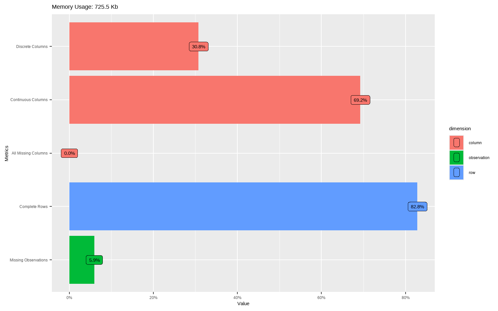
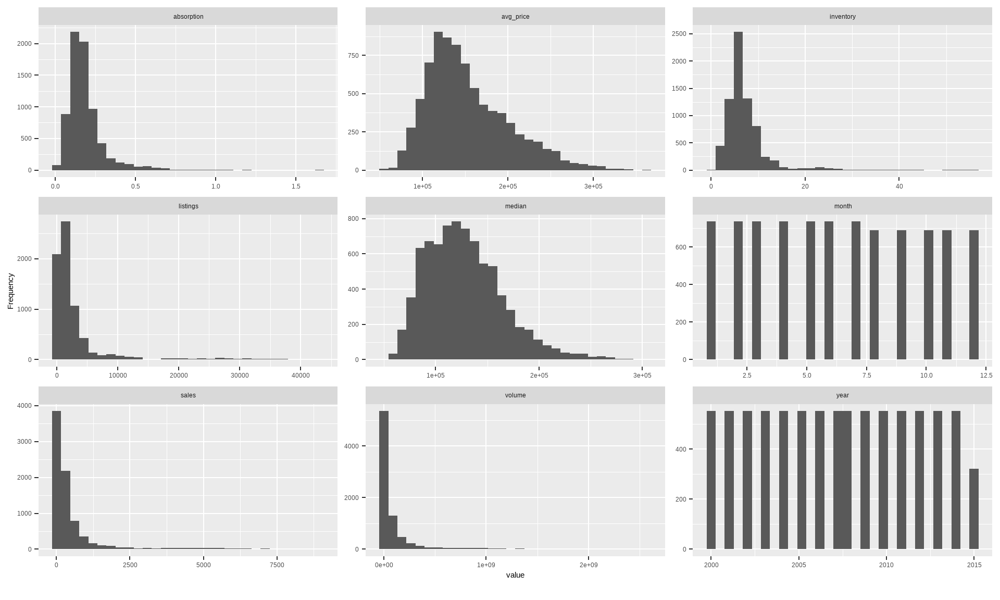
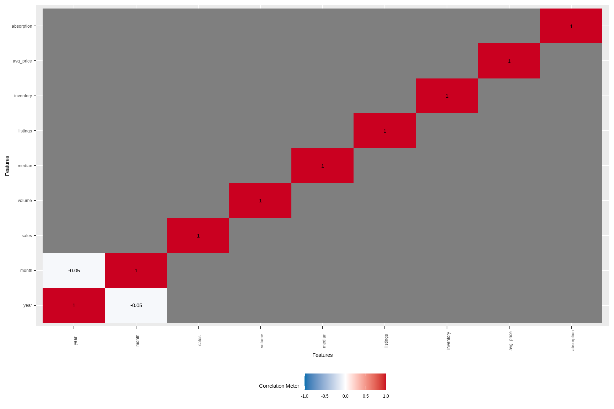
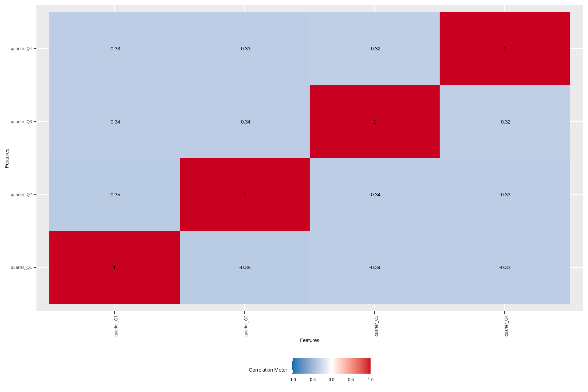
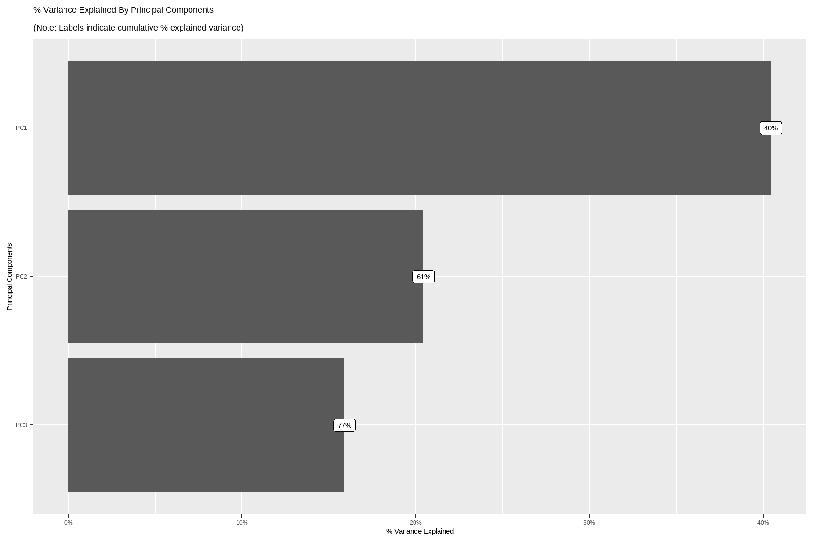
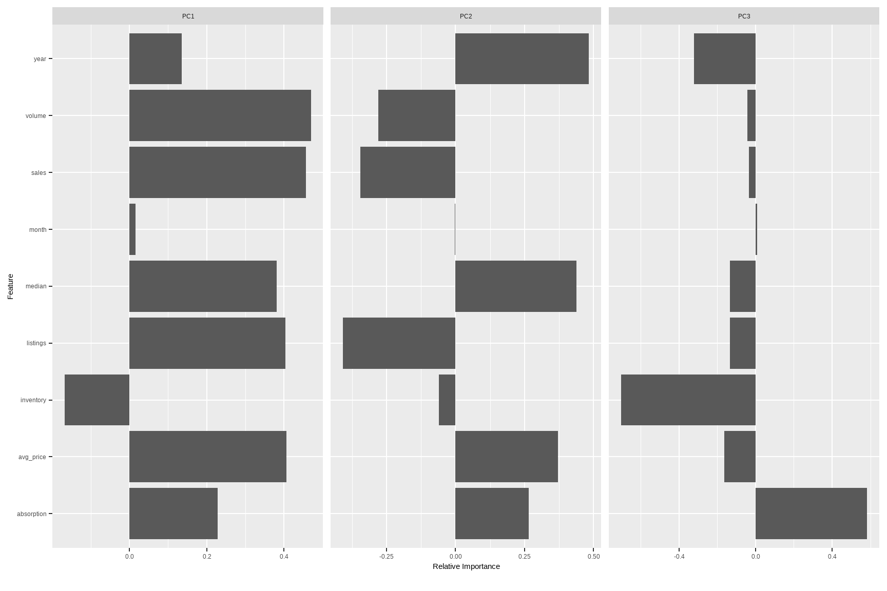
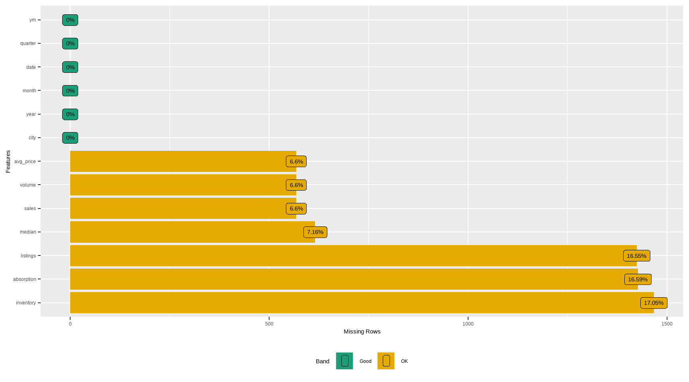
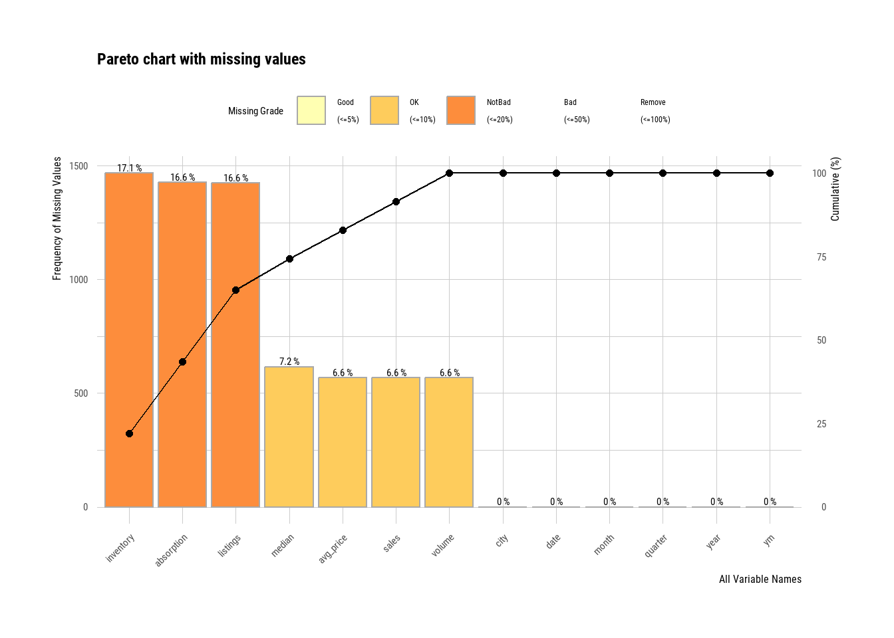
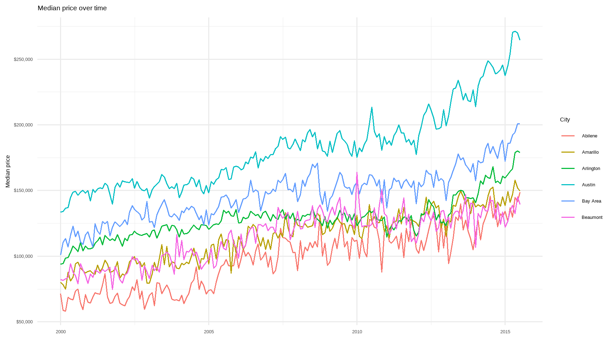
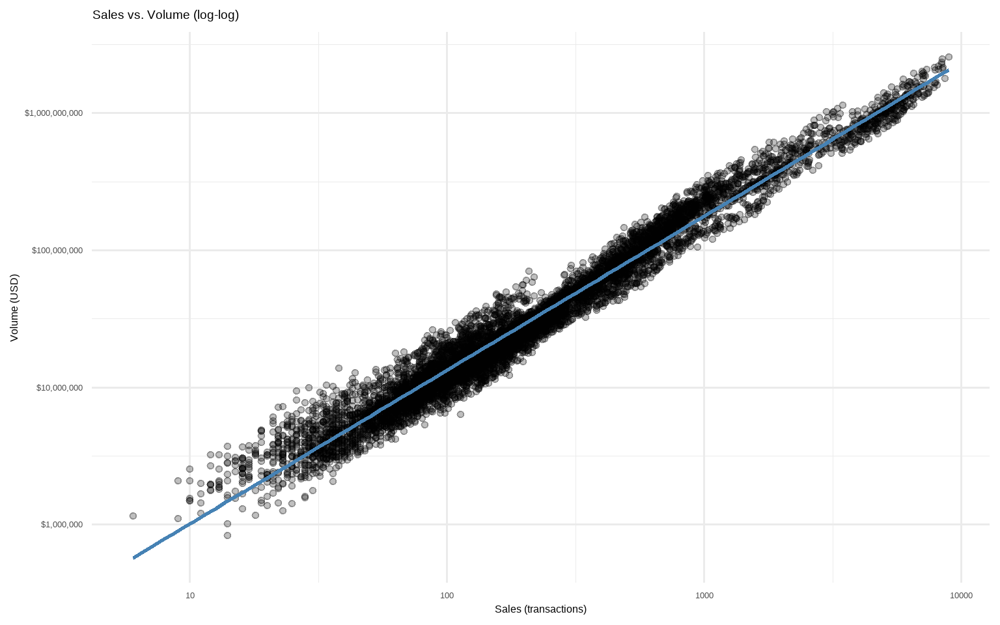

41 Exploratory Data Analysis
This section demonstrates a fast, business-oriented EDA workflow on ggplot2::txhousing. We’ll generate automated reports, engineer interpretable features for marketing/finance contexts, profile missingness, identify errors/outliers, and provide quick interactive tools your stakeholders will actually use. Where possible, we keep everything reproducible in code and easy to extend for your own datasets.
# Core packages
# install.packages(c("tidyverse","lubridate","DataExplorer","dataReporter","skimr","rpivotTable","esquisse","dlookr"))
library(ggplot2)
library(dplyr)
library(tidyr)
library(lubridate)
library(ggplot2)
library(DataExplorer)
library(skimr)
library(dlookr)
# Data: ggplot2 ships with txhousing
data("txhousing", package = "ggplot2")
# Create a clean working copy with business-friendly engineered features
tx <- txhousing %>%
mutate(
date = make_date(year, month, 1),
# Average price per sale (proxy for ARPU-like metric in sales)
avg_price = ifelse(sales > 0, volume / sales, NA_real_),
# Absorption-like metric: sales per listing (how fast inventory turns)
absorption = ifelse(listings > 0, sales / listings, NA_real_),
# Months of inventory is already provided as `inventory`
# Seasonal and calendar features
quarter = factor(quarter(date), labels = c("Q1", "Q2", "Q3", "Q4")),
ym = factor(format(date, "%Y-%m")),
city = as.factor(city)
)
# A couple of quick sanity checks
stopifnot(all(
c(
"city",
"year",
"month",
"sales",
"volume",
"median",
"listings",
"inventory"
) %in% names(tx)
))
# Preview
dplyr::glimpse(tx)
#> Rows: 8,602
#> Columns: 13
#> $ city <fct> Abilene, Abilene, Abilene, Abilene, Abilene, Abilene, Abile…
#> $ year <int> 2000, 2000, 2000, 2000, 2000, 2000, 2000, 2000, 2000, 2000,…
#> $ month <int> 1, 2, 3, 4, 5, 6, 7, 8, 9, 10, 11, 12, 1, 2, 3, 4, 5, 6, 7,…
#> $ sales <dbl> 72, 98, 130, 98, 141, 156, 152, 131, 104, 101, 100, 92, 75,…
#> $ volume <dbl> 5380000, 6505000, 9285000, 9730000, 10590000, 13910000, 126…
#> $ median <dbl> 71400, 58700, 58100, 68600, 67300, 66900, 73500, 75000, 645…
#> $ listings <dbl> 701, 746, 784, 785, 794, 780, 742, 765, 771, 764, 721, 658,…
#> $ inventory <dbl> 6.3, 6.6, 6.8, 6.9, 6.8, 6.6, 6.2, 6.4, 6.5, 6.6, 6.2, 5.7,…
#> $ date <date> 2000-01-01, 2000-02-01, 2000-03-01, 2000-04-01, 2000-05-01…
#> $ avg_price <dbl> 74722.22, 66377.55, 71423.08, 99285.71, 75106.38, 89166.67,…
#> $ absorption <dbl> 0.10271041, 0.13136729, 0.16581633, 0.12484076, 0.17758186,…
#> $ quarter <fct> Q1, Q1, Q1, Q2, Q2, Q2, Q3, Q3, Q3, Q4, Q4, Q4, Q1, Q1, Q1,…
#> $ ym <fct> 2000-01, 2000-02, 2000-03, 2000-04, 2000-05, 2000-06, 2000-…41.1 Data Report
Automate a first-pass profile to see dimensions, types, basic completeness, and distributions.
# High-level overview
introduce(tx)
# Structural intro plots
plot_intro(tx)
# Quick distribution sweep for numerics (great to spot skew and heavy tails)
plot_histogram(tx, ncol = 3L)
# Pairwise correlations (continuous); useful for multicollinearity hints
# Note: if your dataset has many numerics, set cor_args = list(use = "pairwise.complete.obs")
plot_correlation(tx, type = "continuous")
# If you want correlations/associations among discrete variables:
# (city and quarter here; may be high-cardinality)
plot_correlation(tx %>% select(city, quarter), type = "discrete")
# Quick PCA map for continuous variables (after standardizing)
DataExplorer::plot_prcomp(tx %>%
select(where(is.numeric)) %>%
na.omit()
)

Tip: For very wide tables, use maxcat in DataExplorer functions to cap cardinality for cleaner plots.
41.2 Feature Engineering
Business-minded transforms often beat fancy models. The goal is interpretability and better signal-to-noise.
fe_tx <- tx %>%
mutate(
# Year-month numeric for time-aware models
t_index = as.integer(zoo::as.yearmon(date)),
# Price momentum: rolling median (by city) as a simple trend proxy
median_roll3 = dplyr::lag(slider::slide_dbl(median, mean, .before = 2, .complete = TRUE), 0),
# Volume-per-listing: marketing pipeline proxy (dollars per active listing)
vol_per_listing = ifelse(listings > 0, volume / listings, NA_real_),
# Seasonality flags
is_peak_summer = month(date) %in% 6:8,
is_december = month(date) == 12
)
head(fe_tx)
#> # A tibble: 6 × 18
#> city year month sales volume median listings inventory date avg_price
#> <fct> <int> <int> <dbl> <dbl> <dbl> <dbl> <dbl> <date> <dbl>
#> 1 Abile… 2000 1 72 5.38e6 71400 701 6.3 2000-01-01 74722.
#> 2 Abile… 2000 2 98 6.51e6 58700 746 6.6 2000-02-01 66378.
#> 3 Abile… 2000 3 130 9.28e6 58100 784 6.8 2000-03-01 71423.
#> 4 Abile… 2000 4 98 9.73e6 68600 785 6.9 2000-04-01 99286.
#> 5 Abile… 2000 5 141 1.06e7 67300 794 6.8 2000-05-01 75106.
#> 6 Abile… 2000 6 156 1.39e7 66900 780 6.6 2000-06-01 89167.
#> # ℹ 8 more variables: absorption <dbl>, quarter <fct>, ym <fct>, t_index <int>,
#> # median_roll3 <dbl>, vol_per_listing <dbl>, is_peak_summer <lgl>,
#> # is_december <lgl>One-hot encode high-utility discrete features (keep top cities to avoid huge design matrices)
Note: dummify() will create binary indicators and drop the original variable by default.
To avoid exploding dimensions, we lump rare cities first.
fe_tx_small <- fe_tx %>%
mutate(city_lumped = forcats::fct_lump_n(city, n = 10, other_level = "Other"))
tx_dummy <-
dummify(fe_tx_small %>% select(-city), select = "city_lumped")
names(tx_dummy)[1:15]
#> [1] "year" "month" "sales" "volume"
#> [5] "median" "listings" "inventory" "avg_price"
#> [9] "absorption" "t_index" "median_roll3" "vol_per_listing"
#> [13] "date" "quarter" "ym"
# Separate continuous and discrete columns for targeted transformations/modeling
spl <- split_columns(tx)
names(spl)
#> [1] "discrete" "continuous" "num_discrete" "num_continuous"
#> [5] "num_all_missing"Rules of thumb:
- Normalize skewed monetary variables (e.g., \(\log(\text{volume}+1)\)) before linear modeling.
- Group rare categories and avoid too many dummies relative to \(n\).
- Create business KPIs:
avg_price,absorption,vol_per_listing, and simple momentum features.
41.3 Missing Data
Missingness is information. First detect, then decide: delete, impute, or model it explicitly.
# Counts by variable
profile_missing(tx)
#> # A tibble: 13 × 3
#> feature num_missing pct_missing
#> <fct> <int> <dbl>
#> 1 city 0 0
#> 2 year 0 0
#> 3 month 0 0
#> 4 sales 568 0.0660
#> 5 volume 568 0.0660
#> 6 median 616 0.0716
#> 7 listings 1424 0.166
#> 8 inventory 1467 0.171
#> 9 date 0 0
#> 10 avg_price 568 0.0660
#> 11 absorption 1427 0.166
#> 12 quarter 0 0
#> 13 ym 0 0
plot_missing(tx)
# Simple tidy summary (counts and proportions)
tx %>%
summarise(across(everything(),
~ sprintf(
"%d (%.1f%%)", sum(is.na(.)), 100 * mean(is.na(.))
),
.names = "{.col}")) %>%
pivot_longer(everything(), names_to = "variable", values_to = "n_pct_na") %>%
arrange(desc(n_pct_na)) %>%
head(12)
#> # A tibble: 12 × 2
#> variable n_pct_na
#> <chr> <chr>
#> 1 median 616 (7.2%)
#> 2 sales 568 (6.6%)
#> 3 volume 568 (6.6%)
#> 4 avg_price 568 (6.6%)
#> 5 inventory 1467 (17.1%)
#> 6 absorption 1427 (16.6%)
#> 7 listings 1424 (16.6%)
#> 8 city 0 (0.0%)
#> 9 year 0 (0.0%)
#> 10 month 0 (0.0%)
#> 11 date 0 (0.0%)
#> 12 quarter 0 (0.0%)
# Example: median imputation for a few numerics (for demonstration only)
# (In modeling, prefer imputations *within* resampling using recipes/caret/tidymodels.)
tx_imputed <- tx %>%
mutate(
sales = ifelse(is.na(sales), median(sales, na.rm = TRUE), sales),
listings = ifelse(is.na(listings), median(listings, na.rm = TRUE), listings),
inventory = ifelse(is.na(inventory), median(inventory, na.rm = TRUE), inventory),
median = ifelse(is.na(median), median(median, na.rm = TRUE), median)
)
skimr::skim(tx_imputed %>% select(sales, listings, inventory, median))| Name | tx_imputed %>% select(sal… |
| Number of rows | 8602 |
| Number of columns | 4 |
| _______________________ | |
| Column type frequency: | |
| numeric | 4 |
| ________________________ | |
| Group variables | None |
Variable type: numeric
| skim_variable | n_missing | complete_rate | mean | sd | p0 | p25 | p50 | p75 | p100 | hist |
|---|---|---|---|---|---|---|---|---|---|---|
| sales | 0 | 1 | 524.44 | 1077.59 | 6 | 90.0 | 169.0 | 432.00 | 8945.0 | ▇▁▁▁▁ |
| listings | 0 | 1 | 2896.76 | 5499.11 | 0 | 756.0 | 1283.0 | 2527.75 | 43107.0 | ▇▁▁▁▁ |
| inventory | 0 | 1 | 7.01 | 4.22 | 0 | 5.2 | 6.2 | 7.57 | 55.9 | ▇▁▁▁▁ |
| median | 0 | 1 | 127821.26 | 36014.21 | 50000 | 101725.0 | 123800.0 | 147900.00 | 304200.0 | ▃▇▃▁▁ |
# dlookr helpers (diagnose and visualize NA concentration)
diagnose(tx)
#> # A tibble: 13 × 6
#> variables types missing_count missing_percent unique_count unique_rate
#> <chr> <chr> <int> <dbl> <int> <dbl>
#> 1 city factor 0 0 46 0.00535
#> 2 year integer 0 0 16 0.00186
#> 3 month integer 0 0 12 0.00140
#> 4 sales numeric 568 6.60 1712 0.199
#> 5 volume numeric 568 6.60 7495 0.871
#> 6 median numeric 616 7.16 1538 0.179
#> 7 listings numeric 1424 16.6 3703 0.430
#> 8 inventory numeric 1467 17.1 296 0.0344
#> 9 date Date 0 0 187 0.0217
#> 10 avg_price numeric 568 6.60 7917 0.920
#> 11 absorption numeric 1427 16.6 6880 0.800
#> 12 quarter factor 0 0 4 0.000465
#> 13 ym factor 0 0 187 0.0217
plot_na_pareto(tx)
Best practice: Impute inside a modeling pipeline (e.g., recipes::step_impute_median()), and consider adding “was missing” flags to retain signal from missingness patterns.
41.4 Error Identification
Catch anomalies early: impossible values, data entry glitches, or KPI mismatches.
- Logical constraints
violations <- tx %>%
mutate(
v_sales_negative = sales < 0,
v_volume_negative = volume < 0,
v_listings_negative= listings < 0,
v_inventory_negative = inventory < 0
) %>%
summarise(across(starts_with("v_"), ~sum(.x, na.rm = TRUE)))
violations
#> # A tibble: 1 × 4
#> v_sales_negative v_volume_negative v_listings_negative v_inventory_negative
#> <int> <int> <int> <int>
#> 1 0 0 0 0- Price coherence: median vs. average price (avg_price = volume/sales)
Large gaps are not necessarily errors, but extreme ratios can flag data issues.
coherence <- tx %>%
mutate(avg_price = ifelse(sales > 0, volume / sales, NA_real_),
ratio = median / avg_price) %>%
filter(!is.na(ratio), is.finite(ratio)) %>%
summarise(
n = n(),
ratio_p01 = quantile(ratio, 0.01),
ratio_p99 = quantile(ratio, 0.99),
extreme = sum(ratio < 0.25 | ratio > 4, na.rm = TRUE)
)
coherence
#> # A tibble: 1 × 4
#> n ratio_p01 ratio_p99 extreme
#> <int> <dbl> <dbl> <int>
#> 1 7985 0.682 0.992 0- Outliers (univariate) with
dlookr
out_summary <- diagnose_outlier(tx %>% select(sales, volume, median, listings, inventory, avg_price))
out_summary %>% arrange(desc(outliers_cnt)) %>% head(10)
#> # A tibble: 6 × 6
#> variables outliers_cnt outliers_ratio outliers_mean with_mean without_mean
#> <chr> <int> <dbl> <dbl> <dbl> <dbl>
#> 1 volume 1116 13.0 563924698. 106858621. 33125498.
#> 2 sales 899 10.5 3057. 550. 234.
#> 3 listings 742 8.63 17522. 3217. 1568.
#> 4 inventory 437 5.08 20.8 7.17 6.29
#> 5 median 147 1.71 248251. 128131. 125879.
#> 6 avg_price 143 1.66 300786. 153202. 150528.
# Full, human-readable data quality report (HTML) with dataReporter
# install.packages("dataReporter")
library(dataReporter)
makeDataReport(tx) # Generates an HTML report in your working directory41.5 Summary statistics
Concise summaries for continuous and categorical variables, plus grouped business KPIs.
skim(tx)| Name | tx |
| Number of rows | 8602 |
| Number of columns | 13 |
| _______________________ | |
| Column type frequency: | |
| Date | 1 |
| factor | 3 |
| numeric | 9 |
| ________________________ | |
| Group variables | None |
Variable type: Date
| skim_variable | n_missing | complete_rate | min | max | median | n_unique |
|---|---|---|---|---|---|---|
| date | 0 | 1 | 2000-01-01 | 2015-07-01 | 2007-10-01 | 187 |
Variable type: factor
| skim_variable | n_missing | complete_rate | ordered | n_unique | top_counts |
|---|---|---|---|---|---|
| city | 0 | 1 | FALSE | 46 | Abi: 187, Ama: 187, Arl: 187, Aus: 187 |
| quarter | 0 | 1 | FALSE | 4 | Q1: 2208, Q2: 2208, Q3: 2116, Q4: 2070 |
| ym | 0 | 1 | FALSE | 187 | 200: 46, 200: 46, 200: 46, 200: 46 |
Variable type: numeric
| skim_variable | n_missing | complete_rate | mean | sd | p0 | p25 | p50 | p75 | p100 | hist |
|---|---|---|---|---|---|---|---|---|---|---|
| year | 0 | 1.00 | 2007.30 | 4.50 | 2000.00 | 2003.00 | 2007.00 | 2011.00 | 2.015000e+03 | ▇▆▆▆▅ |
| month | 0 | 1.00 | 6.41 | 3.44 | 1.00 | 3.00 | 6.00 | 9.00 | 1.200000e+01 | ▇▅▅▅▇ |
| sales | 568 | 0.93 | 549.56 | 1110.74 | 6.00 | 86.00 | 169.00 | 467.00 | 8.945000e+03 | ▇▁▁▁▁ |
| volume | 568 | 0.93 | 106858620.78 | 244933668.97 | 835000.00 | 10840000.00 | 22986824.00 | 75121388.75 | 2.568157e+09 | ▇▁▁▁▁ |
| median | 616 | 0.93 | 128131.44 | 37359.58 | 50000.00 | 100000.00 | 123800.00 | 150000.00 | 3.042000e+05 | ▅▇▃▁▁ |
| listings | 1424 | 0.83 | 3216.90 | 5968.33 | 0.00 | 682.00 | 1283.00 | 2953.75 | 4.310700e+04 | ▇▁▁▁▁ |
| inventory | 1467 | 0.83 | 7.17 | 4.61 | 0.00 | 4.90 | 6.20 | 8.15 | 5.590000e+01 | ▇▁▁▁▁ |
| avg_price | 568 | 0.93 | 153202.38 | 48188.98 | 54782.61 | 118099.79 | 142510.87 | 181806.06 | 3.626882e+05 | ▃▇▃▁▁ |
| absorption | 1427 | 0.83 | 0.18 | 0.11 | 0.01 | 0.12 | 0.16 | 0.21 | 1.650000e+00 | ▇▁▁▁▁ |
# City-level yearly KPIs
city_year <- tx %>%
group_by(city, year) %>%
summarise(
n_months = n(),
sales_total = sum(sales, na.rm = TRUE),
volume_total = sum(volume, na.rm = TRUE),
median_price = median(median, na.rm = TRUE),
avg_inventory = mean(inventory, na.rm = TRUE),
.groups = "drop"
) %>%
arrange(city, year)
head(city_year, 10)
#> # A tibble: 10 × 7
#> city year n_months sales_total volume_total median_price avg_inventory
#> <fct> <int> <int> <dbl> <dbl> <dbl> <dbl>
#> 1 Abilene 2000 12 1375 108575000 67100 6.47
#> 2 Abilene 2001 12 1431 114365000 70050 6.62
#> 3 Abilene 2002 12 1516 118675000 67100 5.84
#> 4 Abilene 2003 12 1632 135675000 71850 5.68
#> 5 Abilene 2004 12 1830 159670000 73200 4.56
#> 6 Abilene 2005 12 1977 198855000 92400 3.82
#> 7 Abilene 2006 12 1997 227530000 99900 4.48
#> 8 Abilene 2007 12 2003 232062585 102800 4.96
#> 9 Abilene 2008 12 1651 192520335 106900 6.32
#> 10 Abilene 2009 12 1634 202357756 109050 6.12
# Example visual: price over time for a few major cities
top_cities <- tx %>%
count(city, sort = TRUE) %>%
slice_head(n = 6) %>%
pull(city)
tx %>%
filter(city %in% top_cities) %>%
ggplot(aes(date, median, color = city)) +
geom_line(linewidth = 0.7) +
scale_y_continuous(labels = scales::dollar_format()) +
labs(
title = "Median price over time",
x = NULL,
y = "Median price",
color = "City"
) +
theme_minimal(base_size = 12)
# Volume vs. Sales (log-scale to reduce skew)
tx %>%
filter(sales > 0, volume > 0) %>%
ggplot(aes(sales, volume)) +
geom_point(alpha = 0.25) +
scale_x_log10() +
scale_y_log10(labels = scales::dollar_format()) +
geom_smooth(method = "lm",
se = FALSE,
color = "steelblue") +
labs(title = "Sales vs. Volume (log-log)",
x = "Sales (transactions)",
y = "Volume (USD)") +
theme_minimal(base_size = 12)
41.6 Not so code-y process
41.6.1 Quick and dirty way to look at your data
# install.packages("rpivotTable")
library(rpivotTable)
# Works best in HTML output; drag-and-drop just like Excel PivotTables
rpivotTable(
data = tx,
rows = "city",
cols = "year",
vals = "sales",
aggregatorName = "Sum",
rendererName = "Heatmap"
)41.7 Shiny-app based Tableau style
# Minimal Shiny-style dashboard idea (skeleton)
# shinyApp(
# ui = fluidPage(
# titlePanel("TX Housing Explorer"),
# sidebarLayout(
# sidebarPanel(selectInput("city", "City", choices = sort(unique(tx$city)), selected = "Houston")),
# mainPanel(plotOutput("trend"))
# )
# ),
# server = function(input, output, session) {
# output$trend <- renderPlot({
# tx %>%
# filter(city == input$city) %>%
# ggplot(aes(date, median)) + geom_line() +
# labs(x = NULL, y = "Median Price") +
# theme_minimal()
# })
# }
# )41.8 Customize your daily/automatic report
# Option A: One-liner automated HTML report (DataExplorer)
DataExplorer::create_report(tx, y = "median") # sets target variable for focus
# Option B: Knit this Rmd on a schedule (cron/Task Scheduler)
# rmarkdown::render("eda_txhousing.Rmd", output_format = "html_document")
# Optionally explore additional EDA helpers
# install.packages(c("chronicle","descriptr"))
library(chronicle)
library(descriptr)
# Tip: Use these packages selectively; their APIs evolve.
# Prefer stable verbs above; consult vignettes for current functions.41.8.1 Appendix: Small “gotchas” to keep in mind
- For correlation heatmaps, ensure you’re not mixing units without scaling; use
scale. = TRUEin PCA. - For discrete correlations, high-cardinality features (like many cities) can make matrices unwieldy. Thus, lump or select top-\(k\) first.
- Imputation should be inside resampling to avoid leakage.
- KPI checks (e.g.,
medianvsvolume/sales) are diagnostics, not proofs of error. Hence, investigate outliers before removal.